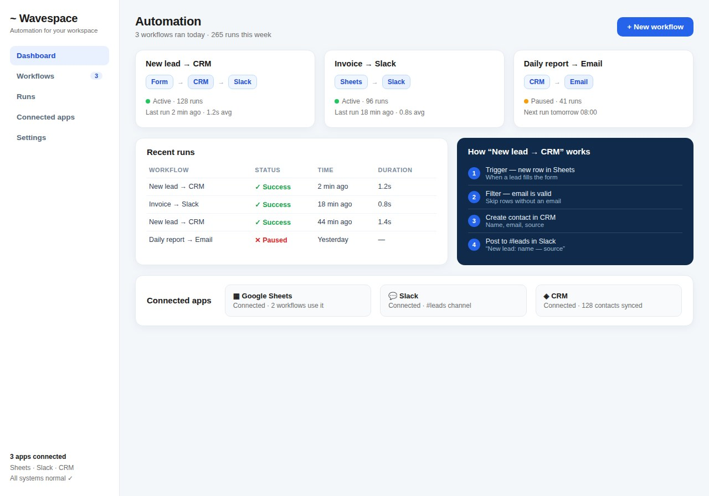
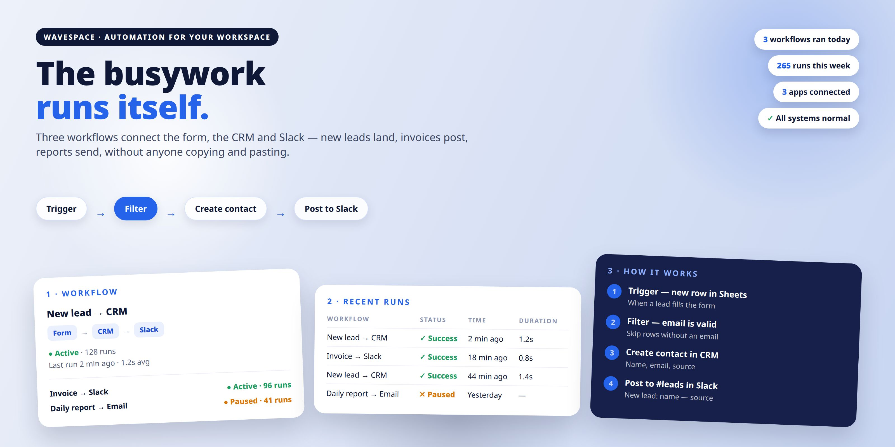
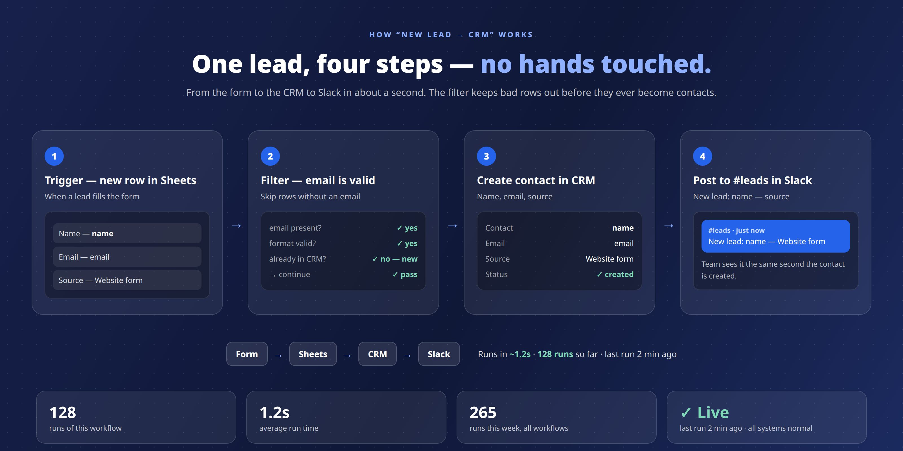
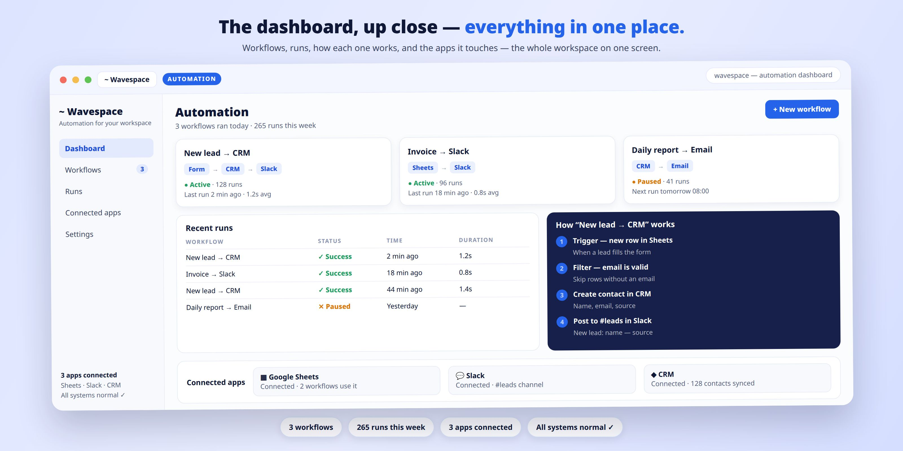
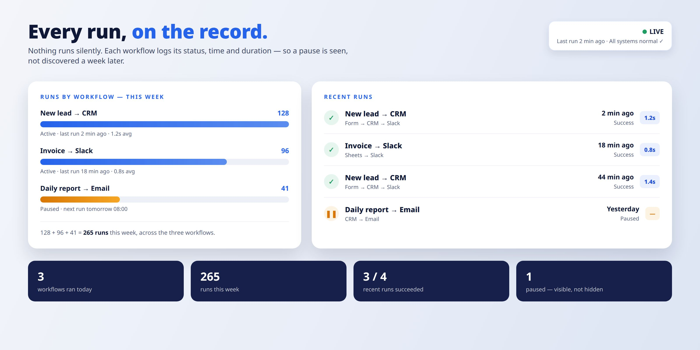
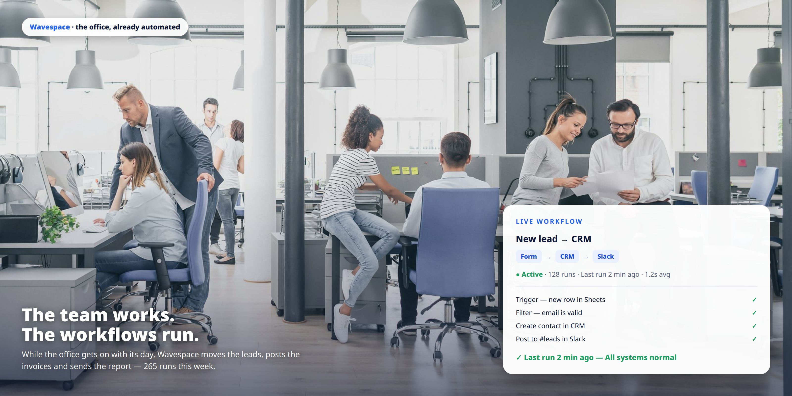
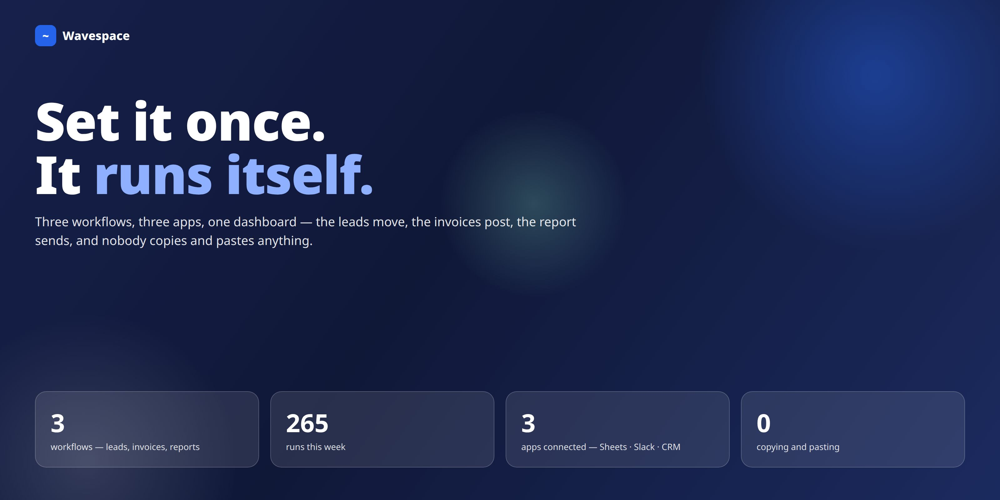
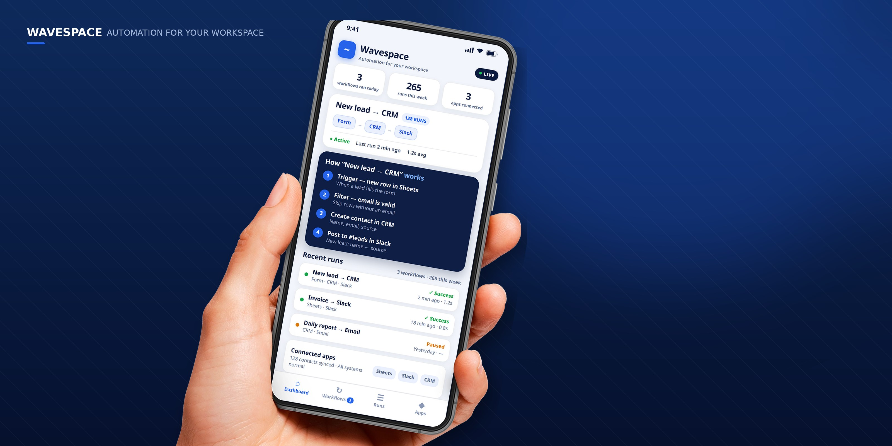

Wavespace
Three workflows connect the form, the CRM and Slack — new leads land, invoices post, reports send, without anyone copying and pasting.
Who this is for: a team that still moves leads, invoices and reports between tools by hand.

The same information, copied between three tools by hand.
New leads arrive in a form, invoices sit in Sheets, and the daily report waits for someone to send it. Each one moves to the next tool by hand — copied, pasted, posted. It works, but it takes time every day, and a missed step is only found later.
Four steps
Trigger — new row in Sheets
When a lead fills the form, the workflow starts.
Filter — email is valid
Rows without an email are skipped before they ever become contacts.
Create contact in CRM
Name, email and source are saved as a contact.
Post to #leads in Slack
The team sees the new lead the same second the contact is created.
Set up so nothing is missed
Bad rows never become contacts
The filter checks the email first. A row without one is skipped before it reaches the CRM.
Every run is on the record
Each workflow logs its status, time and duration, so a pause is seen, not discovered a week later.
One screen for the whole workspace
Workflows, runs, how each one works and the apps it touches — all in one dashboard.
Set it once. It runs itself.
Runs counted this week across the three workflows: 128 + 96 + 41.
Screens
| Workflow | Status | Time | Duration |
|---|---|---|---|
| New lead → CRM | ✓ Success | 2 min ago | 1.2s |
| Invoice → Slack | ✓ Success | 18 min ago | 0.8s |
| New lead → CRM | ✓ Success | 44 min ago | 1.4s |
| Daily report → Email | × Paused | Yesterday | — |
The project in pictures







Want something like this?
Tell me about your project. I reply within one working day.